مقالههاى اين بخش
- 13 آذر 1387
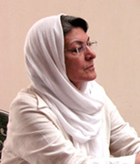
گفت و گو با خدیجه مقدم
دویچه وله / میترا شجاعی
- 13 آذر 1387
خشونت علیه زنان
پرنده خارزار / محبوبه حسین زاده
- 12 آذر 1387
به مناسبت روز جهانی مقابله با بیماری ایدز
زنان آذرمهر / میترا مومنی
- 12 آذر 1387

گزارشي از زناني که با ايدز مي ميرند
اعتماد / آزاده بهرامجي
- 12 آذر 1387
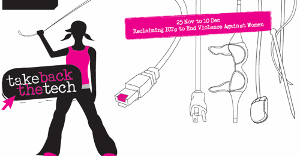
تکنولوژی را بازپس بگیرید!
در دیجیتالی / لیلا
- 11 آذر 1387
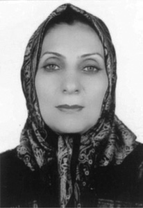
گفت و گو با پروين ذبيحی، فعال حقوق زنان و کودکان
رادیو زمانه / کاوه قاسمی کرمانشاهی
- 11 آذر 1387
گفت و گو با مریم حسین خواه
دویچه وله /محمود صالحی
- 10 آذر 1387

پروين اردلان در مصاحبه باروز:
روزآنلاین / آسیه امینی
- 10 آذر 1387
در حاشیه برگزاری کنفرانس ایوید
خشت خام / نیلوفر
- 9 آذر 1387
ارتباط بین المللی و جنبش زنان
مدرسه فمینیستی / نیره توحیدی
- 9 آذر 1387
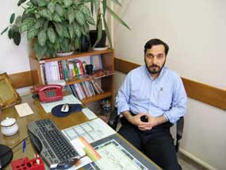
گفت و گو با دکتر عباس شیخالاسلامی و دکتر حسین ناصری
رادیو زمانه / سیدسراجالدین میردامادی
- 8 آذر 1387
خشونت علیه زنان
مردادبانو/فرخنده احتسابیان
- 8 آذر 1387
اثرات کمبود آموزش جنسی در کشور
بی بی سی
- 7 آذر 1387
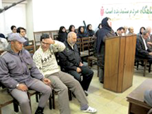
خشونت علیه زنان
کارگزاران
- 7 آذر 1387
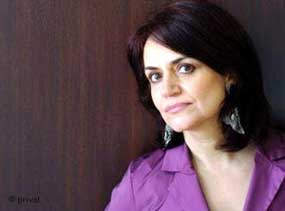
گفت و گو با شهلا شفیق، نویسنده و فعال حقوق زنان، پیرامون خشونت علیه زنان
رادیو زمانه / ایرج ادیبزاده
- 6 آذر 1387

گفتوگو با دکتر سعید پیوندی
دویچه وله / شیرین جزایری
- 6 آذر 1387
خشونت عليه زنان،
تهیه / شیرین فامیلی
- 5 آذر 1387
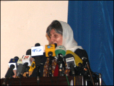
خشونت علیه زنان
بی بی سی
- 5 آذر 1387
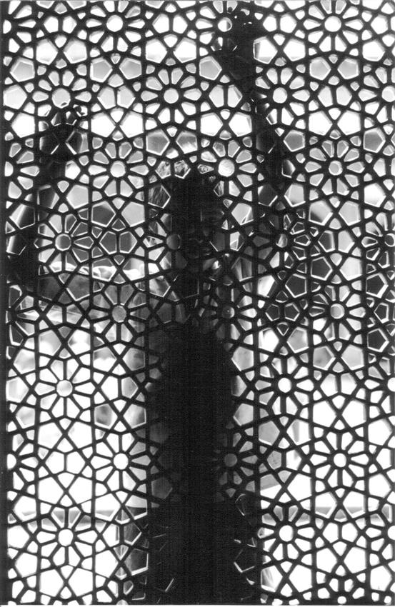
برای فاطمه پژوه
کوله بار / پریسا کاکایی
- 5 آذر 1387
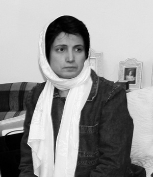
گفتگو با نسرین ستوده
دویچه وله / فریبا والیان
- 3 آذر 1387
دولت و محدودیت های روزافزون برای زنان و دختران
کارگزاران
- 2 آذر 1387
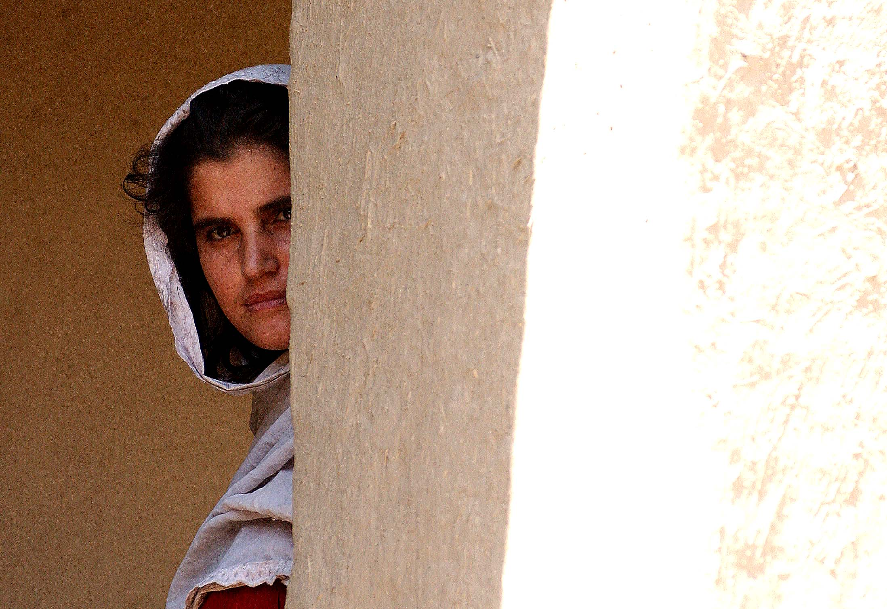
گزارشی از افغانستان
رادیو فرانسه
- 2 آذر 1387
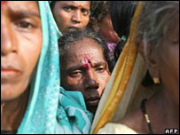
مبارزه با تبعیض
بی بی سی
- 1 آذر 1387
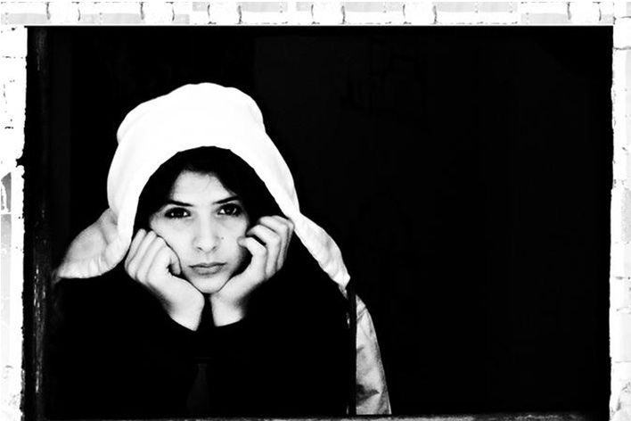
با تصویب طرح بومی گزینی جنسیتی اتفاق می افتد
ترانه بنی یعقوب
- 29 آبان 1387
کمپین بدون مرز
دویچه وله
- 29 آبان 1387

گفتگو با مهرداد مشایخی
رادیو زمانه
- 28 آبان 1387
گفتگو با عبدالفتاح سلطانی
دویچه وله
- 28 آبان 1387
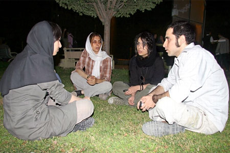
سرود کمپین در روز
نوشین جعفری
- 27 آبان 1387

تحدید زنان، از خانه تا دانشگاه
نجمه معصومی
- 27 آبان 1387
اين يك مطلب كاملا جدي است!
نازلی فرخی
| ... | | | | | 1410 | | | | | ... |